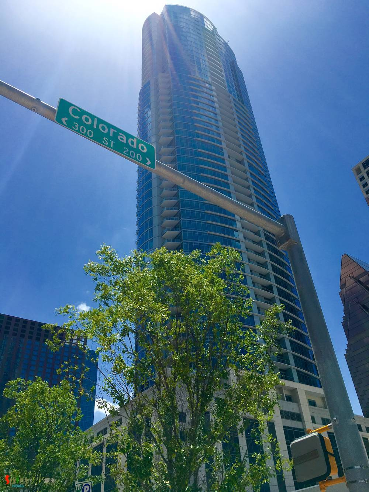
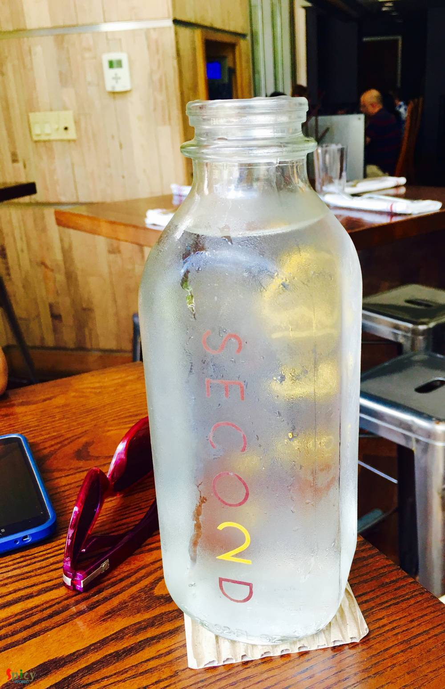
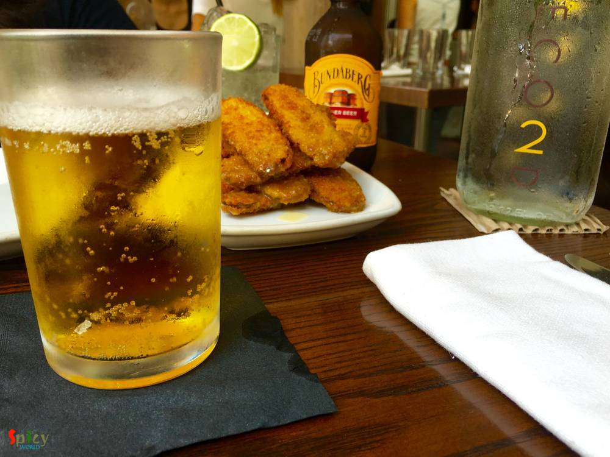
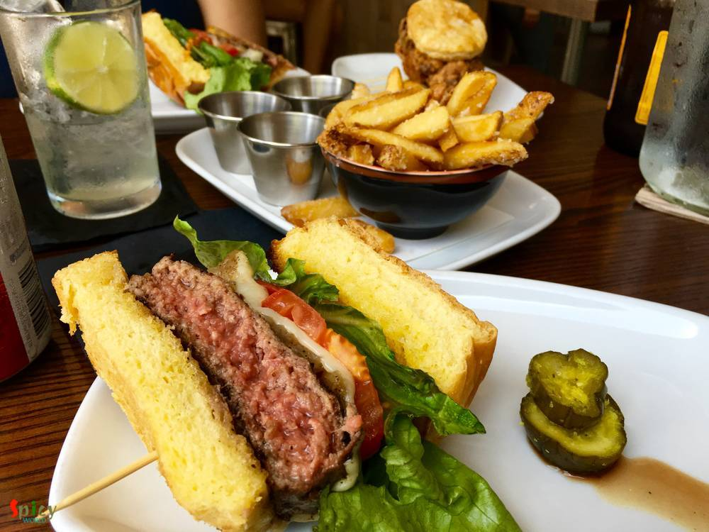
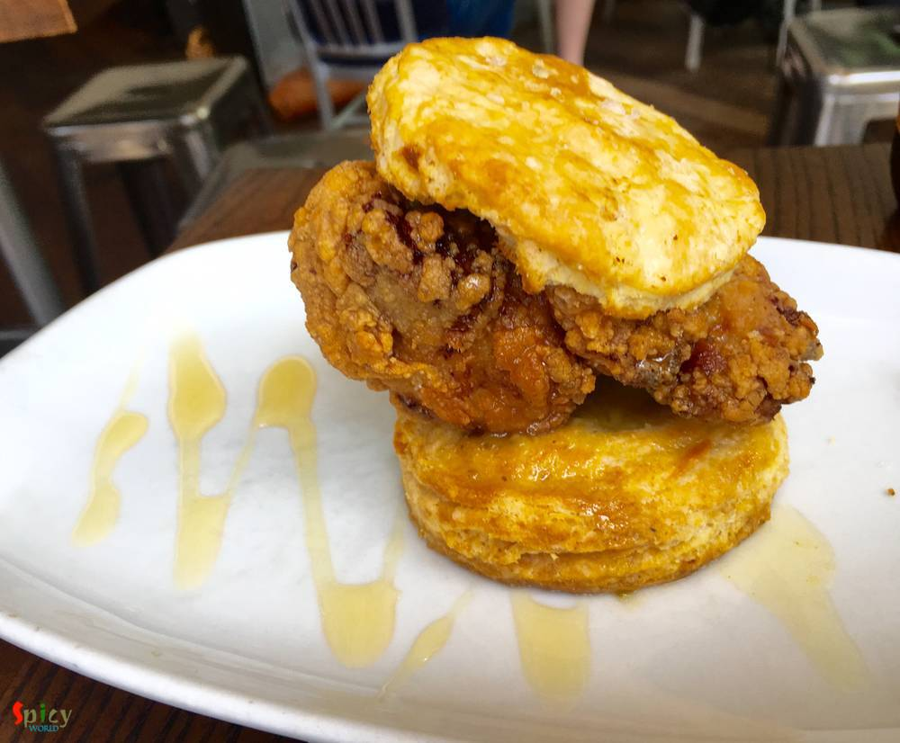
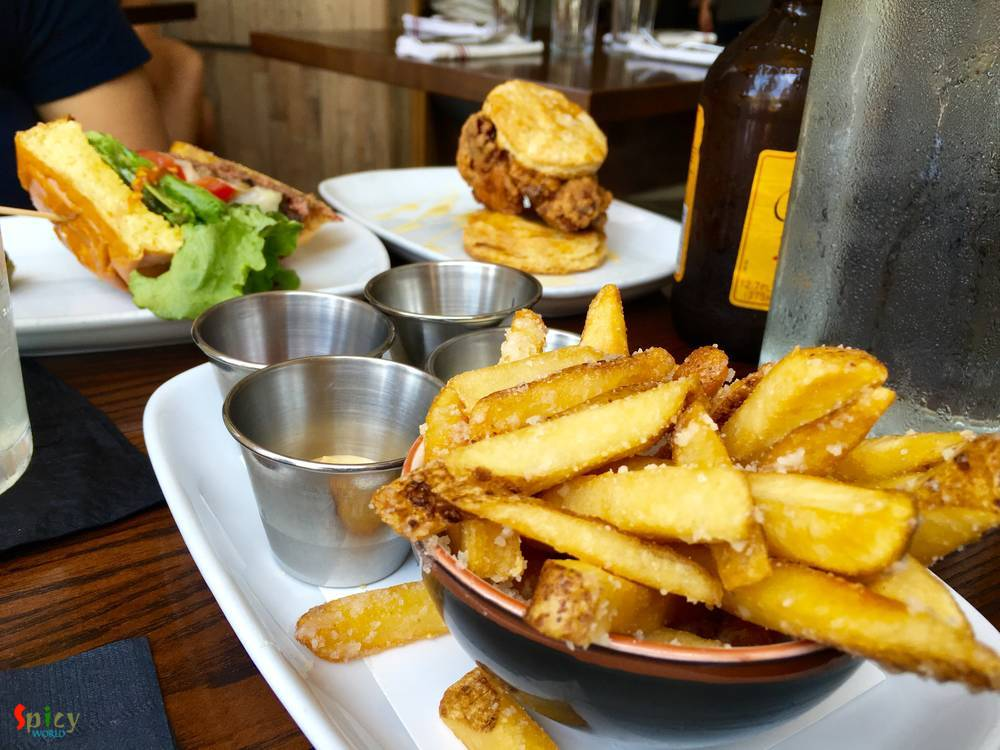

Simple and Easy Recipes
Second Bar and Kitchen / Long Weekend Fun with Food Day 1
© 2016 Spicy World, Published on: Jul 3, 2016
Long Weekend needs some activity and we are pretty much lazy this time, we never like to visit any place or go anywhere long in long weekends as its the time of the year where all the people go out, roads are crowded and hotels/airlines are pricy, so we decided to stay back this weekend a well but decided to enjoy the Food around the place so we hit Downtown Austin yesterday and our destination was Second Bar & Kitchen.

As usual for us a long weekend means a break from work and travel somewhere, explore some food or visit some place famous. As we have something coming up at the end of this month (we will love to keep that secret), so we decided to roam around the city. The day 1 starts lazily and we were not able to decide where are we heading to?? Finally decided to visit Downtown Austin.
We took our favorite Capital Metro Bus from Tech Ridge Bay I towards Republic Square Station (SB) around 11:50AM and it took about 50 minutes (cheap ride for both of us in the express bus a day pass costs $7) for us to reach there. Once we get down from the bus it gave a different feeling when we see lot of people roaming around the city, walking & biking. We started to walk towards the river and we opted to go to "Second Bar & Kitchen" for our lunch (that was the intension of visiting Downtown). I (Amitava) went there earlier but she (no need to mention I guess !!!) haven't so we decided to go there together this time.
Its a nice place with welcoming people. We ordered Fried pickles as starter with a Ginger Beer for her and a mild Beer for me. What to say the pickle was AWESOME!!!

After those, its time for some more food, so we ordered Congress burger (medium rare pork, $18) ... with truffle fries and Fried chicken and biscuit ($12). Both are equally awesome. The meat was tender soft and taste has a WAO!! factor in it.
Although overall the price looks a bit at the higher end with respect to the quantity but the quality, behavior of staffs were awesome. Its a well YES and a must go place if you are from or around Austin or visiting the city. We will love to go back to this place.

As you might know the temperature is around 96 - 98 degree Fahrenheit, so no more roaming around the city. We took a little walk for 10 - 15 minutes around the downtown and then take a bus towards The Domain Stores. We spent about 2 hours there, she had a popsicle stick and I take a cold iced mocha from Starbucks. The after roaming around some stores came back home. While coming back we took Fasten ride share for the first time (as Uber and Lyft left Austin) it was also a nice experience. Use the link from bottom for more details and use my promo code QP8701 for discounts.
Birds always attracts me and here is one on the way to Domain from the Bus Stop.

With this our day one come to an end but some more exciting events are planned for tomorrow. Read our next blog till then share your views and comments.
Tags:travel